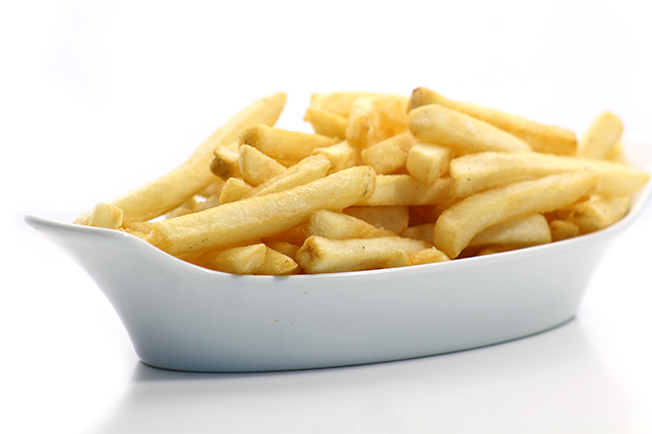

Batata, batata-inglesa, batatinha, pataca, escorva, papa, ou semilha (Solanum tuberosum) é uma planta perene da família das solanáceas. A planta adulta geralmente tem entre sessenta a cem centímetros de altura, possui flores e frutos e produz um tubérculo comestível rico em amido, um carboidrato. Os nomes podem referir-se tanto ao tubérculo comestível quanto à planta como um todo. A espécie teve origem no Cordilheira dos Andes, próximo ao Lago Titicaca, e foi levada a outras regiões do mundo por colonizadores europeus. Atualmente são cultivadas milhares de variedades da espécie em todos os continentes e está inserida como um alimento fundamental na cultura mundial. A relação da batata com a batata-doce é bem pequena porque os vegetais não compartilham do mesmo gênero ou família, fazendo parte apenas da mesma ordem.
A espécie começou a ser cultivada por civilizações andinas há cerca de oito mil anos e o cultivo foi aperfeiçoado pelos Incas, que utilizavam, inclusive, técnicas de irrigação. Os espanhóis introduziram, no século XVI, a espécie na Europa, e se tornou um alimento fundamental no continente. Entretanto a grande dependência da batata fez com que o ataque de pragas que devastam as plantações causasse a morte de milhões de pessoas que tinham a batata como principal alimento, tal como aconteceu na Irlanda em 1845. Atualmente, o tubérculo é o quarto alimento mais consumido do mundo, com milhares de variedades de diferentes cores, sabores e tamanhos que são utilizadas em receitas no mundo todo. O maior produtor mundial é a China, cuja produção em conjunto com a da Índia corresponde a mais de um terço da produção mundial.
Como qualquer cultura, as plantações estão sujeitas ao ataque de diversas espécies de bactérias, fungos e insetos que comprometem a produtividade. Por isso, investe-se na criação de variedades mais resistentes, além da criação de batatas geneticamente modificadas, apesar do grande temor que ainda existe sobre produtos transgênicos. O aumento da produtividade é visto, ainda, como uma solução para acabar com a fome em diversos países. Para reconhecer a importância do tubérculo no mundo, o ano de 2008 foi intitulado o Ano Internacional da Batata pela Organização das Nações Unidas.
A batata (Solanum tuberosum) é uma planta herbácea que pode atingir mais de 100 centímetros de altura e produz um tubérculo - a batata - rico em amido. A batata pertence à família Solanaceae, e compartilha o gênero Solanum com pelo menos outras mil espécies, como o tomate e a berinjela. S. tuberosum é dividida em somente duas subespécies levemente diferentes: andigena, que é adaptada às condições de dia curto e é cultivada somente nos Andes, e tuberosum, a batata que é cultivada por todo o mundo, que acredita-se ser descendente da introdução da subespécie andigena na Europa, que se adaptou aos dias mais longos.
Groove é uma palavra em inglês que significa sulco ou ranhura. É bastante usada no contexto da música, indicando quando os sons encaixam ou combinam de forma satisfatória. No caso específico da bateria, o groove é descrito como um padrão rítmico.